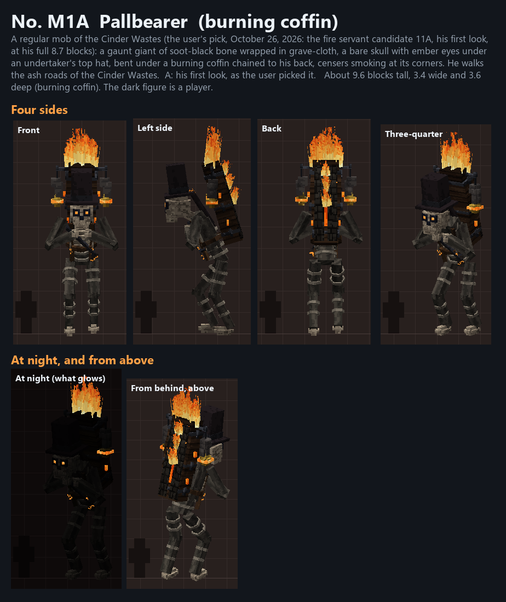
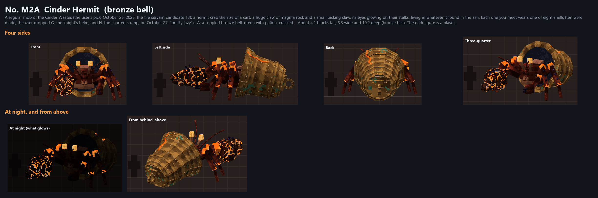
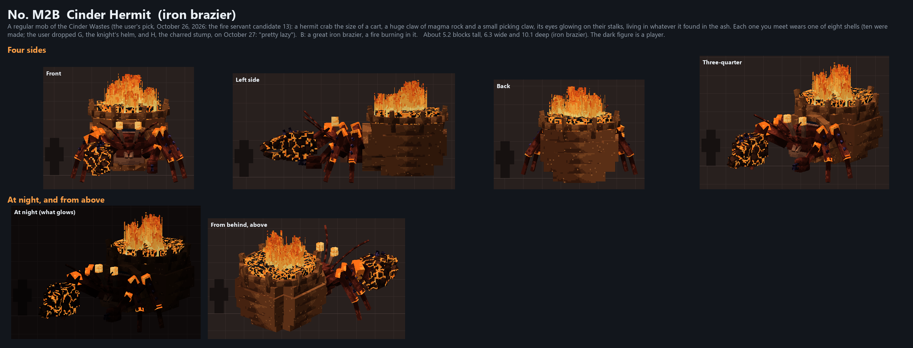
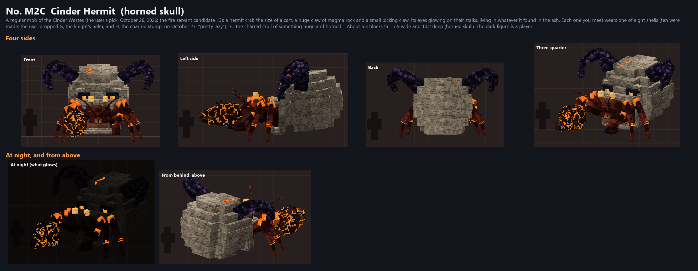
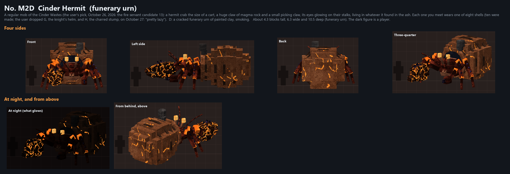
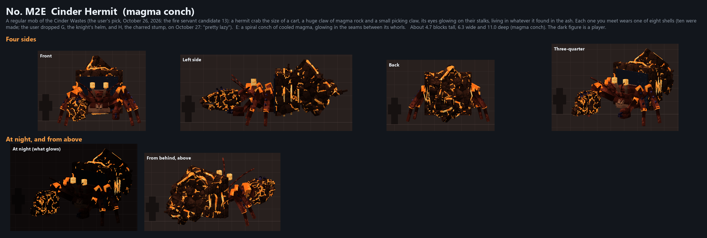
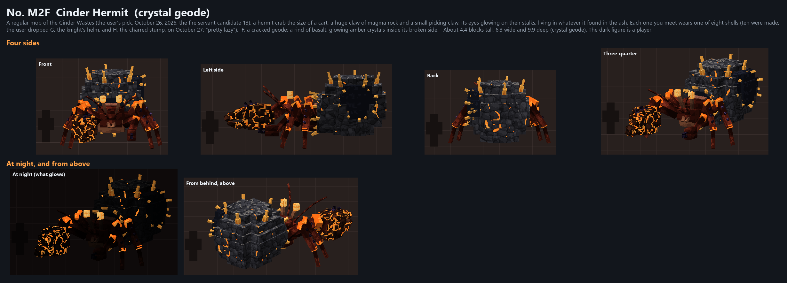
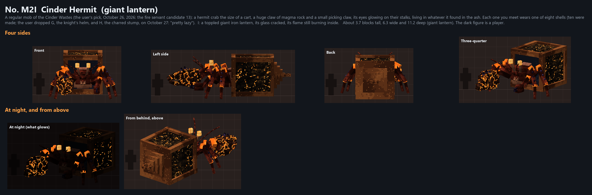
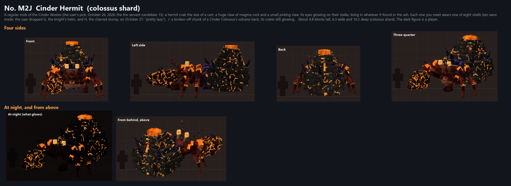

The Pallbearer and the Cinder Hermit in its eight shells: the Cinder Wastes' regular mobs. In the game: /dross showcase cinder_mobs.
originals.png · lineup.png · all_designs_1.png
Their animations (every move as a GIF, made by tools/fire/mobs.py)
A regular mob of the Cinder Wastes (the user's pick, October 26, 2026: the fire servant candidate 11A, his first look, at his full 8.7 blocks): a gaunt giant of soot-black bone wrapped in grave-cloth, a bare skull with ember eyes under an undertaker's top hat, bent under a burning coffin chained to his back, censers smoking at its corners. He walks the ash roads of the Cinder Wastes.
A: his first look, as the user picked it.

A regular mob of the Cinder Wastes (the user's pick, October 26, 2026: the fire servant candidate 13): a hermit crab the size of a cart, a huge claw of magma rock and a small picking claw, its eyes glowing on their stalks, living in whatever it found in the ash. Each one you meet wears one of eight shells (ten were made; the user dropped G, the knight's helm, and H, the charred stump, on October 27: "pretty lazy").
A: a toppled bronze bell, green with patina, cracked.

B: a great iron brazier, a fire burning in it.

C: the charred skull of something huge and horned.

D: a cracked funerary urn of painted clay, smoking.

E: a spiral conch of cooled magma, glowing in the seams between its whorls.

F: a cracked geode: a rind of basalt, glowing amber crystals inside its broken side.

I: a toppled giant iron lantern, its glass cracked, its flame still burning inside.

J: a broken-off chunk of a Cinder Colossus's volcano back, its crater still glowing.
